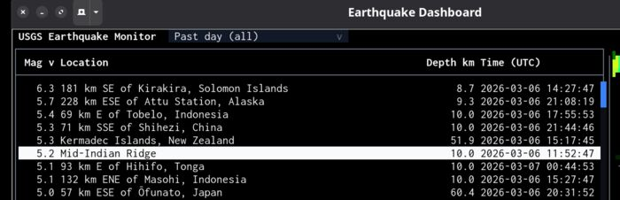
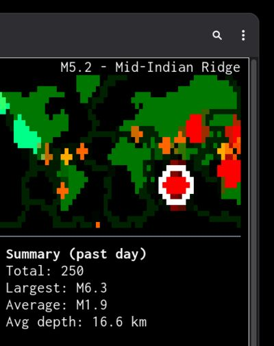
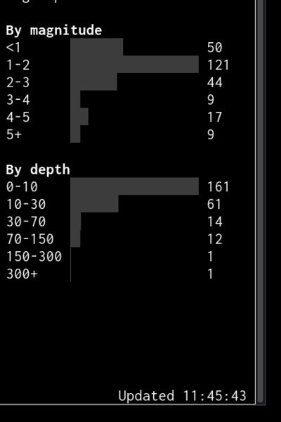

A terminal app you can inspect before you run.
This page uses a live earthquake dashboard to show how a single .melker file
becomes a real application: UI, data fetching, charts, maps, and a permission sandbox,
all in one readable document.
No build step. A .melker file is a document you can read top to bottom.
The earthquake dashboard is a single file. It opens with a <melker> root tag,
just like an HTML page opens with <html>. Inside: a title, a permission policy,
a help page, some styles, a component tree, and a script. That's the entire application.
<melker> <title>Earthquake Dashboard</title> <policy> /* what the app is allowed to do */ </policy> <help> /* built-in help page (markdown) */ </help> <style> /* CSS you already know */ </style> <container style="display: flex; flex-direction: column; height: 100%"> <!-- header, table, map, charts --> </container> <script type="typescript"> // fetch data, update UI </script> </melker>
No package.json, no tsconfig.json, no webpack.config.js.
The file is the app. Send it to someone and they run it with one command.
Reference: .melker file format
The app declares what it needs. You can see it before you run it.
Before any code runs, the <policy> block declares the app's permissions.
This dashboard needs network access to two hosts and map tile access. Nothing else.
<policy> { "name": "earthquake-dashboard", "description": "Real-time USGS earthquake monitor", "permissions": { "net": ["earthquake.usgs.gov", "raw.githubusercontent.com"], "map": true } } </policy>
earthquake.usgs.gov and raw.githubusercontent.com (for tectonic plate
boundary data). It can load map tiles. It cannot read files, run commands, or access any other
network host. If the script tries to fetch('https://evil.com'), it fails.
The policy tells you what the app can do, and the engine enforces it.
Press F12 to open Dev Tools and inspect the running app's permissions, element tree, and state.
Reference: Policy system
Terminal apps lack what browsers take for granted: view source, declared permissions, a sandbox.
You can build terminal UIs with libraries like blessed, Ink, or Textual. You can build dashboards as local web apps. Both work. But neither gives the person running the app a way to know what it does before it runs. There's no permission manifest, no sandbox, no structured inspection.
A .melker file is a document, not a program. You can read its policy, scan its markup,
and understand its scope. The engine enforces the declared permissions at runtime. The file
is also the distribution unit — share a URL, and the recipient runs it directly.
No install, no dependency tree, no build.
Read more: Manifesto
No dependencies to install. A sortable table and a zoomable map are each one element.


With a TUI library, you'd install a table package, a map package, wire up keyboard handling, and hope the pieces work together. In Melker, they're built in. A data table with sorting, selection, scrolling, tooltips, and keyboard navigation is one element:
<data-table id="quakeTable" selectable="single" sortColumn="0" sortDirection="desc" tooltip="auto" bind:selection="selectedQuake" onActivate="$app.showDetails(event)"> { "columns": [ { "header": "Mag", "width": 6, "align": "right" }, { "header": "Location", "width": "fill" }, { "header": "Depth km", "width": 10, "align": "right" }, { "header": "Time (UTC)", "width": 20 } ]} </data-table> <tile-map id="worldMap" lat="20" lon="0" zoom="1" provider="voyager-nolabels" interactive="true" onOverlay="$app.drawOverlay(event)" onClick="$app.mapClick(event)"/>
The table handles sorting, selection, scrolling, and keyboard navigation. The map handles tile fetching, caching, Mercator projection, drag, and zoom. Over 30 components are built in: inputs, dialogs, charts, file browser, split panes, and more.
Reference: Data table · Tile map · All components
The script block is TypeScript. Fetch an API, populate the UI.
The <script> block runs in a sandboxed context with access to
$melker (the engine API) and standard web APIs like fetch.
Here the dashboard fetches USGS earthquake data and populates the table:
const res = await fetch(FEEDS[currentFeed]); const json = await res.json(); const table = $melker.getElementById('quakeTable'); table.setValue(json.features.map(f => [ f.properties.mag.toFixed(1), f.properties.place, f.geometry.coordinates[2].toFixed(1), fmtTime(f.properties.time), f.id, // hidden column for selection binding ]));
setValue passes a 2D array of rows to the table. A dropdown lets users switch between
eight USGS feeds (past hour, past day, past week, etc.) and the data auto-refreshes every 60 seconds.
Reference: Script context ($melker, $app)
Layout uses the CSS you already know: flexbox, borders, padding.
The dashboard uses flexbox and split panes. No new layout language to learn — if you know CSS, you know how to lay out a Melker app:
<!-- Outer: table+sparkline (3/4) | map+summary (1/4) --> <split-pane sizes="3,1"> <!-- Left: table fills space, sparkline fixed at bottom --> <container style="display: flex; flex-direction: column"> <data-table style="flex: 1" .../> <data-bars style="height: 3; flex-shrink: 0" .../> </container> <!-- Right: map (1/4) | summary+charts (3/4) --> <split-pane style="direction: vertical" sizes="1,3"> <tile-map .../> <container> <!-- stats, mag dist, depth dist --> </container> </split-pane> </split-pane>
Dimensions are in terminal cell units (not pixels). Split panes support proportional sizing and interactive resizing by dragging the divider.
Reference: Split pane
State binding, keyboard shortcuts, toasts, and dialogs — with minimal glue code.
The table and map need to stay in sync: select an earthquake in either one, and the other follows. A reactive state object handles this — one line to create it, one attribute to bind the table's selection to it:
// Create reactive state const state = $melker.createState({ selectedQuake: [] as string[] }); // Table binds to it (in markup: bind:selection="selectedQuake") // Map click updates it: export function mapClick(event) { const nearest = findNearestQuake(event.lat, event.lon); if (nearest) state.selectedQuake = [nearest.id]; }
Keyboard commands, toast notifications, and detail dialogs are similarly concise. Each is declared or called in one or two lines:
<!-- Markup: keyboard shortcuts --> <command key="r" label="Refresh Data" global onExecute="$app.refresh()" /> <command key="t" label="Toggle Plates" global onExecute="$app.togglePlates()" /> // Script: toast on new earthquakes $melker.toast.show(newCount + ' new earthquake(s) detected', { type: 'warning', duration: 5000 }); // Script: detail dialog on Enter $melker.alert('M' + q.mag.toFixed(1) + ' — ' + q.place + '\n' + details);
The command palette (Ctrl+K) lists all registered shortcuts.
Tooltips appear on hover over both the map and the sparkline bars.
Reference: State binding · Commands · Toast
Color key filtering, canvas overlays, and SVG geo-data — all configured through CSS and callbacks.
The dashboard applies a color key filter to separate water from land, making markers easier to read. The filter is declared in CSS — no code required:
<style> tile-map { tile-key-color: #abd0e0; /* Water color on Voyager maps */ tile-key-threshold: 0.04; tile-key-match-color: #2a4a6b; /* Water becomes muted blue */ tile-key-other-color: #c8c8c8; /* Land becomes light gray */ tile-blur: 1; /* Smooth rendering artifacts */ } </style>
The onOverlay callback draws earthquake markers as colored dots, with a white
ring around the selected one. Tectonic plate boundaries are loaded as GeoJSON, converted
to SVG paths, and projected onto the map automatically:
export function drawOverlay(event) { const { canvas, geo } = event; for (const q of quakes) { const pos = geo.latLonToPixel(q.lat, q.lon); if (pos) canvas.fillCircleCorrectedColor(pos.x, pos.y, 1, magColor(q.mag)); } } // Tectonic plates as SVG overlay (cached to disk after first fetch) map.props.svgOverlay = platePathsString;
Reference: Tile map · SVG overlays
Sparklines, distribution charts, and summary stats. Declare a chart, feed it data.
Magnitude sparkline below the table.

Summary stats and magnitude/depth distribution charts.
Each chart is a <data-bars> element. Declare it in markup, then pass it data:
<!-- Markup --> <data-bars id="magSparkline" min="0" showValues="false" showLabels="false" onTooltip="$app.sparklineTooltip(event)" style="orientation: vertical; height: 3; gap: 0"/> // Script: feed it the 40 most recent earthquakes sparkline.setValue(quakes.slice(0, 40).reverse().map(q => [q.mag]));
The same pattern applies to the distribution charts and summary stats: declare the element, pass it data. Everything updates when the feed refreshes.
Reference: Data bars
Share the file or the URL. No install beyond the runtime.
Everything on this page — the sandboxed permission policy, color-keyed map, sortable table, charts, state binding, keyboard shortcuts, toast notifications, and tectonic plate overlays — lives in one file. No dependencies, no build step.
View the full source · Follow the tutorial · Back to home
deno install -g -A jsr:@melker/melker
npm install -g @melker/melker
Then run any .melker document from a file or URL:
# Deno melker https://melker.sh/examples/showcase/earthquake-dashboard.melker # Node.js (binary is melker-node) melker-node https://melker.sh/examples/showcase/earthquake-dashboard.melker
See README for all installation methods.
Optional AI assistant, fully opt-in. Nothing is sent anywhere unless you configure it.
Press F8 in any running app to open the assistant.
It requires an API key you provide and only connects when you
explicitly invoke it. It works with any LLM provider
(Anthropic, OpenAI, Ollama, etc.) and supports voice input.
This is possible because Melker apps are inspectable by design. The same structured
element tree and declared actions that let you read a .melker file before running it
also let an AI understand and operate the running UI. The assistant receives the visible
screen content, the element tree with IDs and props, and available keyboard actions.
{kind=link}